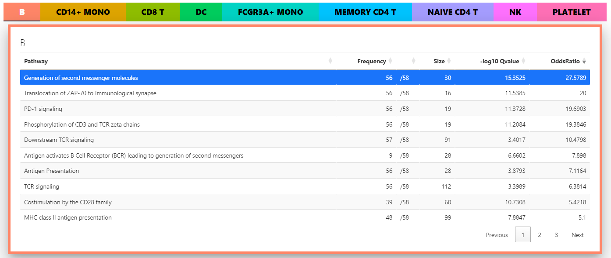
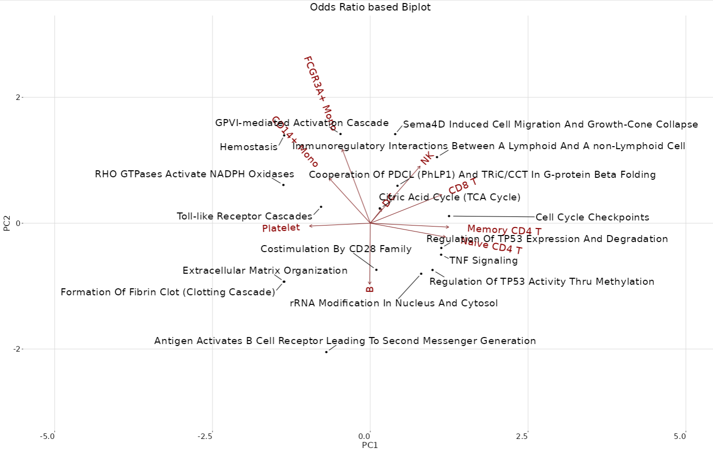
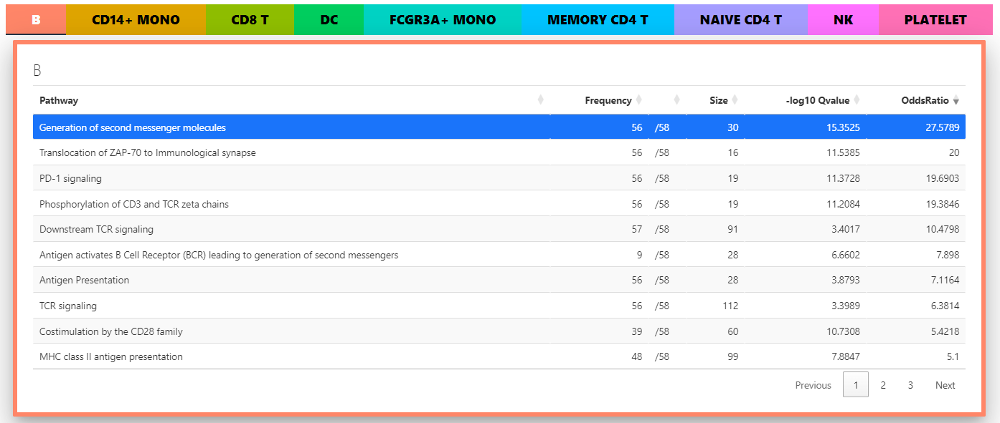
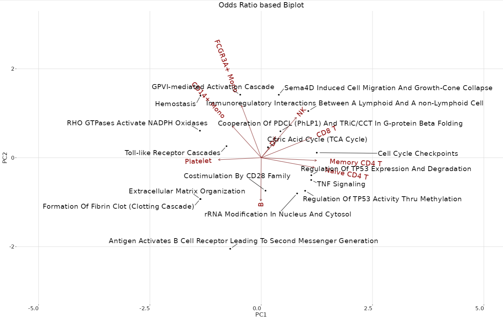
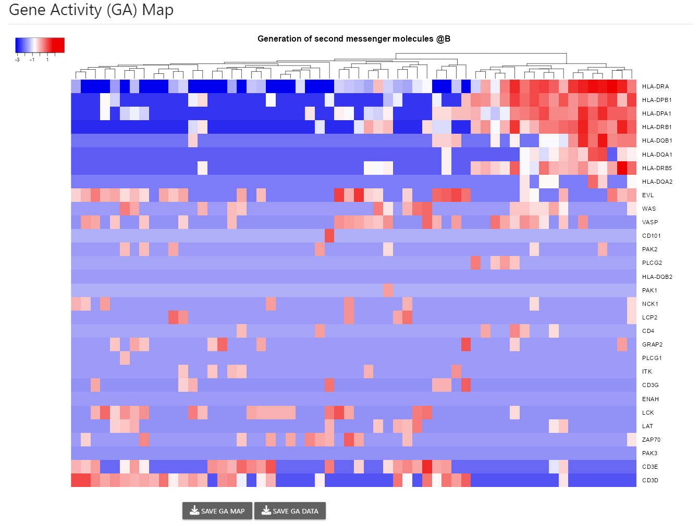
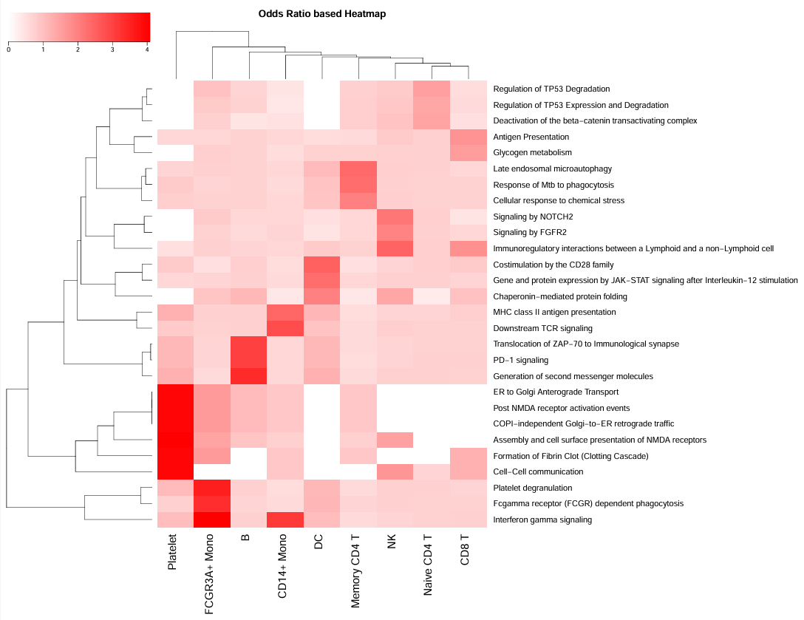

Pathway Enrichment Analysis and Visualization for Single-cell Data

 


Installation
CellEnrich manual is available.
NOTE: on a fresh installation, users may need to install some required interpreter compilers for the system to install other R packages: * C++ compiler * gfortran compiler (FYI: tips for MAC users or other OS) * Seurat >= 5.0.0 is REQUIRED
Install Dependent Packages: * Some packages must be installed from sources that need compilation and a proper version of RTools. * It is recommended to install devtools, and BiocManager packages first before installing the following packages in Github/Bioconductor (not in CRAN).
# install required packages
install.packages('Seurat') # RStudio may need a RESTART for Seurat v5.0.1 to be activated
install.packages('remotes')
install.packages('waiter')
install.packages('farver')
remotes::install_github('vqv/ggbiplot')
# install CellEnrich
remotes::install_github('noobCoding/CellEnrich')Example with PBMC_3K data
# Download data, if not downloaded
download.file('https://github.com/noobcoding/CellEnrich/raw/master/data/pbmcData.RData','pbmcData.RData', mode = 'wb')
download.file('https://github.com/noobcoding/CellEnrich/raw/master/data/pbmcClustInfo.RData','pbmcClustInfo.RData', mode = 'wb')
download.file('https://github.com/noobcoding/CellEnrich/raw/master/data/Human_Reactome.RData', 'Human_Reactome.RData', mode = 'wb')
# Load library and data
library(CellEnrich)
library(Seurat)
load("pbmcData.RData")
load("pbmcClustInfo.RData")
CountData <- pbmcData
GroupInfo <- pbmcClustInfo
# CellEnrich uses normalized count data as input
CountData <- NormalizeData(CountData)
# This will run CellEnrich
CellEnrich(CountData, GroupInfo)Large datasets for testing
Two datasets for testing CellEnrich are too big for hosting on GitHub so you can directly download them at Zenodo link including:
- ‘GBM_sub’ is the Glioblastoma data from link, which contains human HFC(Highly functionally connected) and LFC(Low functionally connected) Glioblastoma cells with added information of GRIA2 expression.
# Glioblastoma data can be directly downloaded using the Zenodo link above!
download.file('https://github.com/noobcoding/CellEnrich/raw/master/data/Human_WikiPathways.RData', 'Human_WikiPathways.RData', mode = 'wb')
gbm_sub <- readRDS(file = "GBM_sub.rds")
gbm_sub$counts<-NormalizeData(gbm_sub$counts)
CellEnrich(gbm_sub$counts, gbm_sub$class)- ‘PD_dat’ is the Parkinson’s disease data from link, which contains human dopamine cell cluster information about Parkinson’s disease vs. Control.
# Parkinson's disease data can be directly downloaded using the Zenodo link above!
download.file('https://github.com/noobcoding/CellEnrich/raw/master/data/Human_Reactome.RData', 'Human_Reactome.RData', mode = 'wb')
PD_dat <- readRDS("PD_dat.rds")
PD_dat$count <- NormalizeData(PD_dat$count)
CellEnrich(PD_dat$count,PD_dat$type)Example with Alzheimer’s data
# Download Alzheimer's data to the working directory
download.file('https://github.com/noobcoding/CellEnrich/raw/master/data/Alzheimer_Counts_sampled.RDS','Alzheimer_Counts_sampled.RDS', mode = 'wb')
download.file('https://github.com/noobcoding/CellEnrich/raw/master/data/Alzheimer_CellType_sampled.RDS','Alzheimer_CellType_sampled.RDS', mode = 'wb')
download.file('https://github.com/noobcoding/CellEnrich/raw/master/data/Human_Reactome.RData', 'Human_Reactome.RData', mode = 'wb')
GroupInfo <- readRDS("Alzheimer_CellType_sampled.RDS")
CountData <- readRDS("Alzheimer_Counts_sampled.RDS")
CountData <- NormalizeData(CountData)
CellEnrich(CountData, GroupInfo)Dependency
- R - >= 4.2.0
- dplyr - 0.8.5
- DT - 0.13
- farver - 2.0.3
- ggplot2 - 3.3.0
- ggrepel - 0.8.2
- highcharter - 0.7.0.9001
- htmltools - 0.4.0
- magrittr - 1.5
- Rtsne - 0.15
- scales - 1.1.0
- scMerge - 1.5.0
- scran - 1.14.6
- Seurat - 5.0.1
- shiny - 1.4.0.2
- shinyFeedback - 0.2.0
- shinyjs - 1.1
- shinymaterial - 1.0.1
- SingleCellExperiment - 1.8.0
- sortable - 0.4.2
- uwot - 0.1.8
- waiter - 0.1.1.9000*
Authors
- Hai Nguyen hainct@unist.ac.kr – @noobCoding
- Jinhwan Kim
- Prof. Dougu Nam dougnam@unist.ac.kr
License
This project is MIT licensed